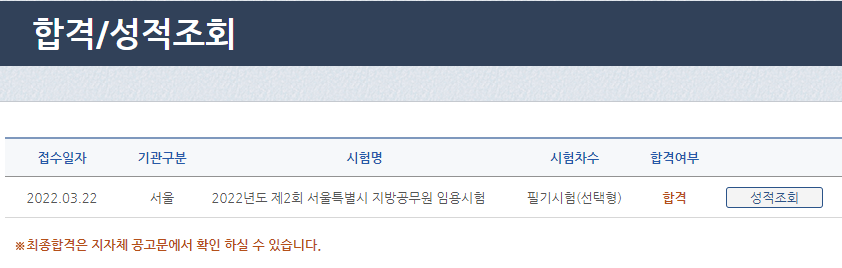
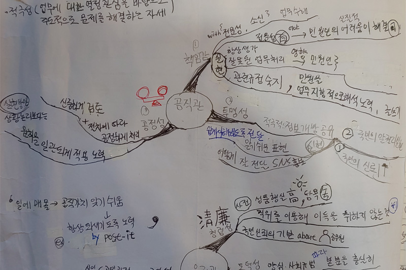
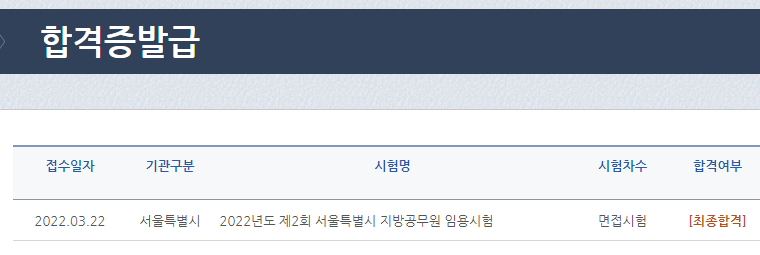

-------- 인성검사(2022.7.30.) 장소:동작구 서울공업고등학교(보라매역) -------- 너무 막연한 문제에 대해서 '예 아니오'로만 답을 해야 해서 너무 당황했습니다. 예를 들면 "나는 대화할 때 대화 목적을 염두에 두고 듣는다" 뭐 이런 식인데요 저는 일과 관련된 경우에는 '예'이지만, 일상대화에서는 '아니오'라서 마킹하는데 고민이 많았습니다. 그래서 100문제 정도 마킹을 못했습니다. (풀기 전 안내방송에서 평가하는 것이 아니니 솔직하게 마킹하라고 알려주지만 살짝 걱정) (어떤 분은 아무 생각없이 1번으로 찍어도 괜찮다던데, 저는 그냥 빈칸으로 비워두었습니다.) 단, 일관성을 평가하기 위해 비슷하거나 동일한 문제가 반복해서 나오는데요 그것은 최대한 일관성을 유지하려고 노력했습니다. -------- 면접준비 -------- 면접준비 하면서 느낀점과 팁(보시려면 터치하세요)
-------- 면접시험(2022.8.17) -------- 복장 : 롯데마트 폐업할 때 산 2만원짜리 재킷과 7천원 주고 산 검은색 바지를 입고 감 (국가직은 캐주얼 복장으로 오신분들도 있었는데 서울시는 모두 정장) (넥타이는 왠지 나만 안 한 느낌) --- 배고플 때 먹으려고 박카스와 자유시간을 사가지고 감. -- 국가직 때는 1번이라 너무 빨리 봐서 당황했었는데요. 서울시는 반대로 거의 끝번인 8번을 배정받음 (이상하게 '도' 아니면 '모'임) (예전에 한 분이 회사이름을 '도모소프트'라고 지었다고 함) (사업은 '도'아니면 '모'라는 의미) 내 뒤 마지막 번호인 9번은 오지 않았음 (아마 국가직 합격해서 '이제 시험따위 보기 싫어' 이런 느낌?) (한참을 대기하다가 오후 4시 55분 정도에 면접본 거 같음) (암기해야 하는 사항을 계속 머릿속으로 반복하면서 대기) (장점은 연습시간이 있다는 것이지만, 대기하면서 점점 에너지와 집중력이 떨어지는 것은 단점) --- 면접관님이 3분 앉아 계셨음 (굉장히 피곤해 보이심. 면접관도 극한직업이라고 생각함) (나는 왠지 모르겠지만 쿠팡에서 잘못 산 뾰족구두가 너무 신경쓰였음) (다행히 각도 상 면접관이 내 구두를 볼 가능성이 거의 없었음) --- Q'자신을 한 줄로 요약해 보세요'@ --- Q 스트레스는 어떻게 푸시나요? 네 여러가지 방법이 있는데요. 저는 주로 청소를 합니다. 청소를 하면 왠지 스트레스도 같이 지워지는 느낌이 듭니다. 또 때에 따라 좋아하는 책의 아무 페이지나 펴서 어쩌고저쩌고... 뭔가 안 풀려서 스트레스를 받을때는 어려움을 극복하는 영화를 봅니다. 최근에는 영화 '쉐프'를 보았습니다. 주방장이 최고의 요리를 만들기 위해 팀원들과 어쩌고저쩌고... ---- 어쩌고저쩌고... ---- Q 마지막 하고 싶은말 해보세요 "법의 테두리 안에서 주민들에 대한 유연함을 잊지 않는 그런 공무원이 되겠습니다. 어쩌고저쩌고..." -------- 최종발표(2022.9.28) -------
: '미흡'아니어서 다행임 (인성검사 100개나 마킹 못 했는데 '미흡' 아닌 것 보니 다행임) : 성적확인을 해보니 회계학 찍은 거 하나도 안 맞았음ㅠㅠ (딱 70점 맞음) (후회는 없음, 회계학 1문제를 버리고 정답률이 높은 다른 과목 2~3문제를 푸는게 최선의 선택임)